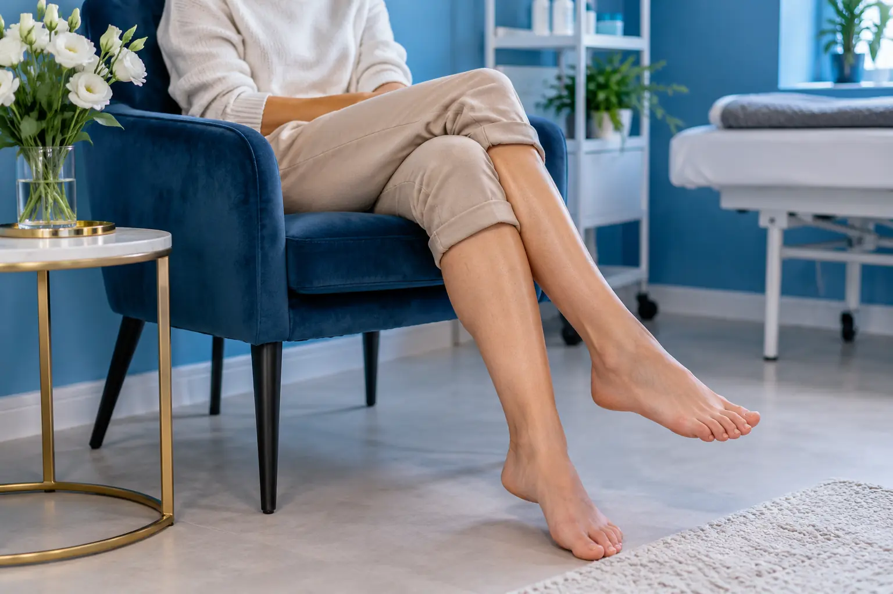

Kojų depiliacija: blauzdos, šlaunys ar visos kojos
Autorius: Madbeauty redakcija · Numatyta 2026 m. gruodžio 2 d. 16:00 (Lietuvos laiku)
Kaip palyginti blauzdų, šlaunų ir visų kojų pasiūlymus, suprasti paslaugos apimtį ir prieš vizitą sutarti dėl zonų ribų.

Kojų depiliaciją rinkitės pagal norimą sutvarkyti plotą ir tiksliai aprašytus darbus. Blauzdos, šlaunys ir visos kojos meniu paprastai nurodo skirtingas zonas, bet vien pavadinimas nepasako, kur konkrečiai jos prasideda ar baigiasi. Prieš registruodamiesi išsiaiškinkite zonų ribas ir atskirai pasirinkite metodą.
Kaip suprasti zonų pavadinimus
Jei norite tvarkyti tik blauzdas, lyginkite pasiūlymus, kuriuose aiškiai įvardyta ši zona. Jei aktualios šlaunys, patikrinkite, ar aprašyta visa norima sritis. „Visos kojos“ paprastai reiškia platesnę apimtį, tačiau prieš vizitą verta pasitikslinti, ką teikėjas į ją įtraukia. Nėra pagrindo manyti, kad visi meniu vienodai apibrėžia kelių, kulkšnių ar pėdų ribas.
- Blauzdos – pasirinkimas, kai aktuali tik ši kojų sritis; pasitikrinkite, kurioje vietoje baigiasi aprašyta zona.
- Šlaunys – patikslinkite, kokia jų dalis įtraukta ir ar aprašymas atitinka jūsų poreikį.
- Visos kojos – patikrinkite, kurios atskiros sritys įskaičiuotos ir ar paslauga apima abi kojas.
Zonos apimtis ir metodas – du skirtingi pasirinkimai
Pirmiausia nuspręskite, kokį plotą norite depiliuoti, tada lyginkite metodą. Amerikos dermatologų akademija nurodo, kad vaškas pašalina plaukelį nuo šaknies, o skutimas jį patrumpina ties odos paviršiumi. Šis skirtumas paaiškina metodą, bet nepasako, kokias zonas apima konkretus paslaugos paketas. Amerikos dermatologų akademijos paaiškinimas apie plaukelių šalinimo būdus.
Vaškas ir cukraus pasta meniu gali būti pateikiami kaip atskiri pasirinkimai. Vien iš paslaugos pavadinimo nereikėtų spręsti apie tikslią priemonę, jos sudėtį ar atlikimo eigą – tai turi būti nurodyta teikėjo aprašyme. 2026 m. spalio 9 d. peržiūrėtame vieno Kauno salono meniu atskirai įvardytos blauzdų ir visų kojų depiliacijos vašku bei pateikti cukraus pastos pasirinkimai. Tai vieno konkretaus meniu pavyzdys, ne rinkos standartas ar Madbeauty pasiūla. Peržiūrėtas Kauno paslaugų meniu.
Palyginimo pavyzdys
Tarkime, norite depiliuoti tik blauzdas. Palyginkite blauzdų pasiūlymą su visų kojų pasiūlymu, bet nevertinkite vien pagal pavadinimą: sužinokite, ar aprašyta zona sutampa su tuo, ko norite, ir ar nurodytas metodas yra jums aktualus. Taip išvengsite situacijos, kai pasirinkta eilutė apima daugiau arba mažiau darbų, nei tikėjotės.
Ką patikslinti prieš vizitą
- Kuri zona įtraukta ir kur tiksliai jos ribos?
- Ar pasirinkta kaina skirta blauzdoms, šlaunims, ar visoms kojoms?
- Ar paslaugos aprašyme nurodytas vaškas, cukraus pasta ar kitas metodas?
- Ar į pasiūlymą įtraukti papildomi darbai, jei pasirinktą zoną reikia patikslinti?
Jei pirmiausia norite palyginti depiliacijos metodus ir pasiruošti vizitui, skaitykite Depiliacijos gidą: vaškas, cukraus pasta, zonos ir vizito eiga.
Procedūrų aprašai kataloge: Kojų depiliacija vašku, Kojų depiliacija cukrumi. Miestą ir realaus teikėjo pasiūlymą pasirinkite kataloge, kai tokia pasiūla pateikta.
Susiję gidai
Šaltiniai
- AAD · plaukelių šalinimo metodai · www.aad.org
- Depiliacija · Kauno meniu · www.treatwell.lt
- NVSC · grožio paslaugų sauga, 2026-09-17 · nvsc.lrv.lt